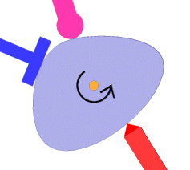

Cam Follower Mate
A cam-follower mate is a type of tangent or coincident mate. It allows you to mate a cylinder, plane, or point to a series of tangent extruded faces, such as you would find on a cam.
The following picture shows three followers which stay in contact with the cam as it rotates.

Example:
Follow the video given below to understand Cam Follower Mate.
Part 1:
Part 2: